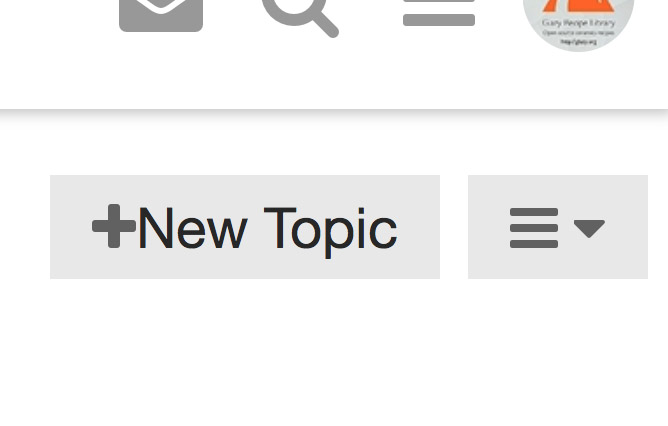
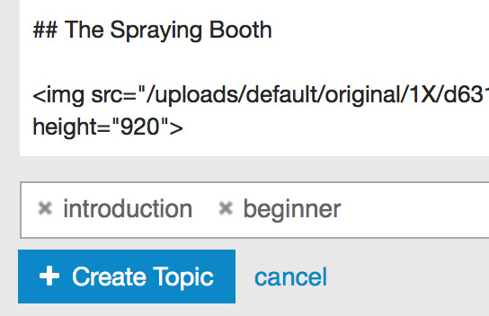

Why a Wiki?
There are numerous ceramics-related discussion groups on the web, the most famous being Clayart, an email-based group. In the past few years, Facebook Groups have been gaining popularity and some ceramics groups like Ceramics Recipes, Clay Buddies, and Ceramics Solutions have over ten thousand members.
One drawback of discussion groups is that often the same questions are asked over and over again, for example the classic “My glaze is crazing, how do I fix it?” Ceramics Wiki seeks to overcome this issue by creating a Topic for each issue (e.g. Glaze Crazing). All information and questions related to a single issue are directed to a single Topic.
Ceramics Wiki also aims to build knowledge. Unfortunately, Facebook Groups are very difficult to search, and information is very difficult to find. By archiving knowledge shared in these groups, Ceramics Wiki will gradually become a comprehensive ceramics reference.
How can I help?
It’s easy to contribute to Ceramics Wiki. If you find any information on the wiki that you think is incorrect, you can hit the Reply button at the bottom of the article and let the author know about the error. If you would like to add new information, either edit an existing Topic or create a new one.
Who can edit the Wiki?
New users of Ceramics Wiki can only comment on Topics (by clicking the Reply button) and cannot automatically edit Topics. (This is to prevent spammers from making unwanted changes to the wiki.) If you would like to become an editor, just click Reply on any article and state that you would like to edit. An administrator will change your permissions so that you can edit the entire Wiki.
You can also directly ask for editing permissions by sending a message here.
What kind of content can I add?
Links to ceramics articles, videos, and websites are all useful. (For example, here is a list of Residencies, Internships, and Apprenticeships) Quoting information and sharing photos from reliable sources is also good. (Just make sure you have permission to use the material!) And, of course, original material is welcome.
Who owns this wiki and my content? Will the wiki always be free?
We all own this wiki! All content in the wiki is licensed under the Creative Commons Attribution-NonCommercial-ShareAlike License. Anyone is free to:
- Share — copy and redistribute the material in any medium or format
- Adapt — remix, transform, and build upon the material
(Note that by submitting content to this wiki, you also agree to the Creative Commons license.)
Futhermore, there are multiple administrators of this wiki who have access to the full backups. If this website were to be taken down for some reason, the wiki content would still be safe.
Finally, this wiki will remain free and accessible for everyone.
About Wiki Topics
A Topic is an article about a single subject. Topics are organized by Category (e.g. Glazes -> Glaze Faults) and Tags. Categories help us keep articles organized, while tags are descriptive keywords that help users search for information.
Commenting (Replying) on a Topic
Any user of the wiki can make comments (Reply) to a topic. If you have a question about the content, spot an error, or want to add your own knowledge, just hit the Reply button at the bottom of the article.
Editing an existing Topic
Almost all Topics on the Ceramics Wiki are Wiki Topics. Wiki Topics are special articles that anyone can edit. To edit a Topic, just go to the bottom of the article and click the pencil icon. When you are done editing, click the Save Edit button.
Creating a New Topic
From the home page, click the New Topic button

Select a Category
An edit window will slide up from the bottom of the screen. Select a Category for this Topic:
Add a descriptive title to the Topic
Add the article text.
The Ceramics Wiki uses Markdown:
“Markdown is a simple way to format text that looks great on any device. It doesn’t do anything fancy like change the font size, color, or type — just the essentials, using keyboard symbols you already know.”
Add Links
Adding links is really easy! Just copy the link address from your browser window (starting with http:// or https://) and paste it into the edit window. For links to many websites, a preview will be generated. For links to Youtube and other video websites, the video will be embedded in the article.
Add Photos
Simply drag and drop photos from your computer into the edit window.
Add Tags
Tags are optional keywords that help users find your article. Just enter a relevant word and hit “Enter”.

Finished!
Now, just hit the Create Topic button and you are done!


{kind=link}
{kind=link}
{kind=link}
{kind=link}
{kind=link}
{kind=link}
{kind=link}